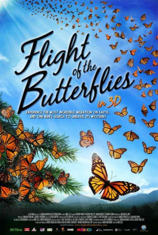

Alternativ: Flight of the Butterflies
 
 IMDB-Wertung: 7.1 / 10
IMDB-Wertung: 7.1 / 10  Metascore:
Metascore: 
Amerikanische Monarchfalter haben eine Lebenserwartung von 4-6 Wochen. Jedes Jahr ziehen drei Generationen der schönen Insekten nach Norden der Blüte der Seidenpflanzen hinterher. Doch im Herbst geschieht etwas Phantastisches: Eine Generation von Superschmetterlingen wird geboren! Sie werden länger leben, haben viel stärkere Flugmuskeln und können Fettreserven anlegen. Sie ziehen zielsicher in Gebirgstäler in Zentralmexiko, in denen sie noch nie gewesen sind und in denen sie den Winter verbringen. Im Frühling kehren sie zurück, um die nächste einfache Schmetterlingsgeneration zu produzieren. Dieses alljährliche Naturwunder wurde erst in den 1970er Jahren entdeckt. 40 Jahre hartnäckiger Detektivarbeit kostete es den Zoologen Fred Urquhart, die Spur der Monarchfalter zu verfolgen.
Jahr: 2012
Dauer: 45 Minuten
FSK: 0
Land: England Studio: Ascot Elite Entertainment GroupTonspuren: DTS - ,
Untertitel:
Auflösung: 1080p (1920x1080) Größe: 3573 MB
Genre: Drama, Familie, Dokumentation, Biographie
Regisseur: Mike Slee
Drehbuch: Wendy MacKeigan, Mike Slee
Soundtrack: Leonardo Heiblum, Jacobo Lieberman
Darsteller:
 Gordon Pinsent als Dr. Fred Urquhart
Gordon Pinsent als Dr. Fred Urquhart Shaun Benson als Ken Brugger
Shaun Benson als Ken Brugger Stephen Bogaert als Fred Urquhart
Stephen Bogaert als Fred Urquhart Stephanie Sigman als Catalina Aguago
Stephanie Sigman als Catalina AguagoDatei: X:\Dokumentationen\Tiere\Flug der Schmetterlinge, Der (2012, FSK0, 1920x1080) 3D.mkv seit 06.02.2016
Festplatte: HD Serien(SU-Z)+Dokus+Musik
 Es gibt insgesamt 37 Filme in der Gruppe 'Dokumentationen\Tiere'
Es gibt insgesamt 37 Filme in der Gruppe 'Dokumentationen\Tiere'